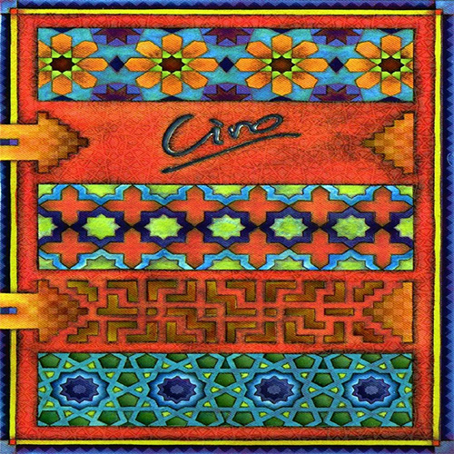
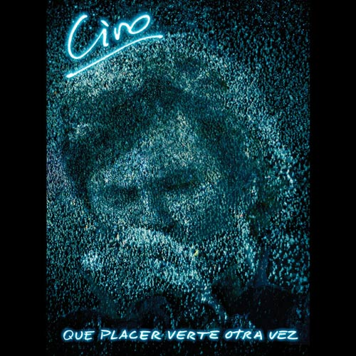
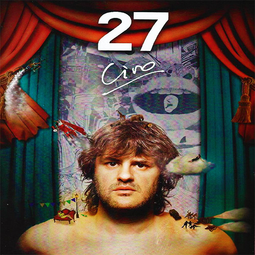

Biografia

Ciro y Los Persas es una banda de rock argentina, liderada por el cantante y compositor Andrés Ciro Martínez, quien fuera líder de Los Piojos. La banda fue formada a mediados de 2009, dos meses después de la despedida de Los Piojos en el Estadio Monumental de River Plate ante 75.000 personas. Según Ciro, él no quería caer en un estado de "depresión" por la ruptura de Los Piojos, es por eso que junto con el guitarrista Juan Manuel Gigena Ábalos, (guitarrista que también se fue a probar a Los Piojos después de la salida de Pity Fernández) decidieron armar el grupo "Los Persas". Luego se sumaría "Broder" Bastos, ex guitarrista de Bossa n'Stones - Bossa n' Marley y Bossa n' Roses, Julián "Lulo" Isod, ex baterista de un trío llamado Tres buen ensamble y de la antigua banda de rock pop Virus, Chucky de Ipola, tecladista que estuvo en Los Piojos un buen tiempo y después de la ruptura se unió a la banda Ciro, años después seguiría su carrera de solista y Juan Manuel Gaspari, se alejaría de la banda para seguir su carrera en Jóvenes Pordioseros y darle lugar a Rodrigo Pérez. La banda tuvo sus primeros recitales en diciembre de 2009 en Rosario y Córdoba.
El primer disco: Espejos El disco contiene un rechazo a los "conquistadores", un respaldo a la idea de nuestra pertenencia a Latinoamérica y una defensa a los aborígenes. Esa idea ya se expresa desde el primer tema del disco ("Antes y después"). También la idea de libertad se expresa en el segundo tema, "Servidor", donde se menciona la esclavitud. En "Chucu-chu", aparece un pequeño fragmento homenajeando al tema "El Fantasma de Canterville", compuesto por Charly García y popularizado por León Gieco. En el tema "Paso a Paso" se afirma que la injusticia trae inseguridad y que se soluciona con inclusión social, a través de la educación y el hambre cero.
El disco termina con un Bonus Track: "Aguanten los trapos del deseo y la libertad. Aguanten los trapos del saber y la dignidad. Aguanten los trapos de la singularidad. Aguanten los trapos porque sí, porque da" Entre los agradecimientos, se destacan las influencias de Ciro: Carlos Gardel, Pappo, Moris, Luca Prodan (El disco incluye una canción en su memoria "Luca"), Rubén Rada, León Gieco, David Bowie, Indio Solari, Iggy Pop, The Beatles y The Rolling Stones.
Segundo Disco: "27" El segundo disco, lanzado a mediados de noviembre de 2012 fue titulado 27; lleva ese nombre ya que según Ciro es su número de la suerte. El disco mezcla casi a la perfección rock, baladas, candombe y tango. Logro ser un éxito y causó una gran sensación entre los fans y la crítica, a la semana de su lanzamiento, logró ser disco de oro.5 Las primeras veces que sonaría sería en la ciudad de San Pedro, Buenos Aires, en el marco del "Festival Mastai", en el Club San Martín de la Provincia de Corrientes, en el Club Itapúa de Posadas, Misiones, en el espacio Hugo Espectáculos de la provincia de San Juan, en el Estadio Arena de Maipú, y tres fechas consecutivas en el Estadio Luna Park de Buenos Aires los días 13, 14 y 15 de diciembre. En 2013 continuaría presentado el disco, el día 27 de enero en la ciudad de Mar del Plata, el 9 de febrero en el marco del festival Cosquín Rock 2013 ante 40.000 personas y el 11 de febrero en la ciudad de General Roca, provincia de Río Negro ante 140.000 personas. Últimamente Los Persas siguieron presentando su ultimo disco, este caso en el estadio de Ferro Carril Oeste con un marco de 30.000 personas.